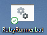

Rubyプログラムの実行にバッチファイルを使ってみた
おそらく人によっては駆使しているであろう「バッチファイル」。
主はそこまで駆使していなかったのだが、Rubyを始めるついでに少し実用的なやつを作ろうと思ったのである。
やりたいこと
テキストエディタ(主の場合はwindowsのメモ帳)で作成したRubyのプログラムのファイル(拡張子.rb)を実行する場合、通常はこうする。
・・・まあ、これをいちいち入力してもいいんですけどね
流石に非効率だと主は考えたようで
確かに、わざわざ毎回コマンドを入力してディレクトリに移動して実行するのは手間じゃないですか？ですよね？
どうにかして楽したいなあ・・・
効率化する
ここでバッチファイルの出番だと主は気づいてしまったようで。
バッチファイルとは簡単に表すとターミナルで実行したいコマンドを拡張子.batで保存しておき、使うときはそのファイルをクリックするだけという
超絶便利なもので、仕事の効率化などでよく聞く(よね？)アレです。
以下、Rubyプログラム実行バッチファイル「RubyRunner.bat」の内容を書いときます。
@ECHO OFF ECHO 実行するRubyプログラムのファイル名を入れてください :INPUT_START SET IN1= SET /P IN1= #ファイル名入力部分(ファイル名は変数IN1に代入しています) IF "%IN1%"=="" EXIT #何も入力されなかった場合は終了 :INPUT_CONF #←要らないかも cd C:Users\(ユーザー名)\OneDrive\デスクトップ\Ruby #今回はデスクトップの「ruby」というフォルダにあるプログラムを実行するようにしてあります。 ruby %IN1% #ここで実行します。前後に改行(ECHO.)入れてもいい ECHO 実行完了
ECHO 続けて実行する場合はRubyプログラム名を入力してください GOTO :INPUT_START #最初に戻ります